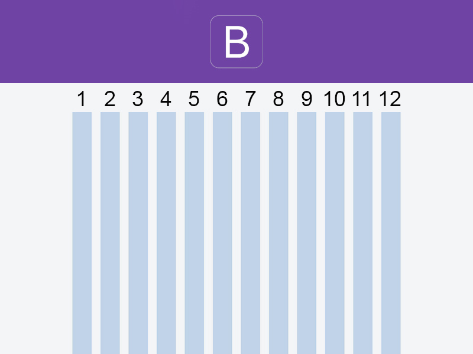

12'li Izgara Sistemi'ni Anlamak
Bootstrap, sayfa düzerini (layout) oluşturmak için, CSS flexbox ile oluşturulmuş ızgara (grid) sistemini kullanmaktadır.
Bootstrap ızgara sistemi 3 ana yapıdan oluşur:
Her bir sütun, 12 kolondan meydana gelmekte ve 12'lik Grid sistemi oluşturmaktadır. 12'lik ızgara sisteminde, kolon sayısı varyasyonları ile istenildiği gibi tasarım yapılabilmektedir.

Öntanımlı Kolon Sınıf Adları
Her ölçüdeki cihaza uyumlu (responsive) tasarımın oluşturulması için Bootstrap'te öntanımlı kolon sınıfları (class) kullanılır.
Bootstrap kolon sınıfları
Örnekler:

Eşit Kolonlar
Eşit kolonlu tasarım için:
Ya da col sınıfına sahip element sayısına göre (Örneğin; 3 adet .col sınıfı olan elementler 3 adet kolon oluşturur) otomatik olarak eşit kolonlara bölünebilir.